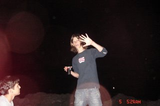

So i'll stick to my friends and my friends...
A todos os meus amigos{kind=link}

Estes dois marmelos são meus amigos. Sim, autênticos exemplares de uma das relações mais bonitas e perfeitas que o Homem já criou: a amizade. Na minha opinião os amigos são pessoas "transparentes". E digo isto porque já estamos tão habituados a ter a companhia deles que só damos conta do quanto são importantes na sua ausência. Mas isto é habitual no ser humano... Estes aqui são os Luizes. O Pimentel e o Zeca. E são duas pessoas com imensas semelhanças comigo, a começar pelo amor ao álcool e acabando na forma de contar os últimos trocos para pagar uma rodada à malta. É interessante na amizade o facto de não nos repetirmos e desfazermos em palavras de apreço em relação ao próximo, como acontece no amor. É tão natural que funciona por instinto, até a própria separação amigo/conhecido começa-se a fazer por si. E ao fim de algum tempo de jogos de confiança, honestidade, de interesses e situações extremas conseguimos definir o grupo dos seleccionados. Não que os restantes sejam maus, mas há aqueles que funcionam como uma verdadeira família, porque ninguém escolhe os irmãos ou os primos. Outra das particularidades deste sentimento, é o facto do tempo passar a correr quando se reune um grupo de amigos. E muito raramente se farta de um amigo. Nos namoros vejo vezes sem tafulho o desabafo "pachorra pa a sofrer". Eu prefiro nem fazer uma listagem dos verdadeiros amigos que tenho, correndo o risco de deixar alguém para trás e eventualmente ofender quem me considera um amigo ou de extra valorizar alguém que se calhar não merece tal estatuto. Resumindo, uma vez vi um azulejo daqueles com provérbios e quadras que dizia o seguinte: "viver sem amigos não é viver". A velha sabedoria popular a mostrar a sua razão... Certo é que tenho a agradecer aos meus amigos, porque é com eles que passo desde as intermináveis gargalhadas aos dias de depressão crítica. Devo-lhes parte de mim porque ao conviver com os outros me construo. E se alguém ainda tem dúvidas sobre o que este post trata, exprimentem a sensação de ajudar um amigo. Eleva o espírito, torna-nos pessoas melhores ou é simplesmente um prémio. Um bonus oferecido pela vida.